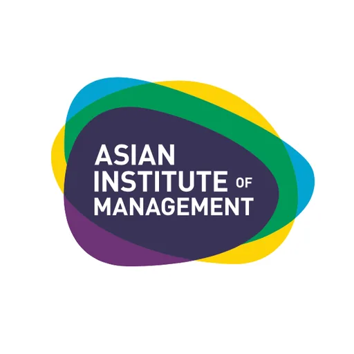

AIM–Dado Banatao Incubator
Asian Institute of Management · NCR
The AIM–Dado Banatao Incubator is a premier technology startup incubator hosted by the Asian Institute of Management (AIM) in Makati City. Named after legendary Filipino technologist and venture capitalist Dado Banatao, the incubator focuses on nurturing early-stage technology ventures with high commercial potential across Southeast Asia.
- Category
- Technology Business Incubator
- Host institution
- Asian Institute of Management
- City
- Makati
- Region
- NCR
- Operating status
- Operating
About the Center
Operating from AIM's Makati campus, the incubator bridges the gap between academic innovation and industry, leveraging AIM's extensive network of business leaders, alumni, and international partners to fast-track startup growth. It is part of AIM's broader commitment to entrepreneurship and technology-driven economic development in the Philippines.
Programs & Services
- Startup Incubation — Physical and virtual incubation support for early-stage technology startups
- Acceleration Programs — Structured cohort-based programs to accelerate startup growth and market entry
- Business Mentoring — Access to AIM faculty, alumni mentors, and seasoned entrepreneurs
- Investor Linkage — Connections to angel investors, venture capital firms, and corporate partners
- Co-working Space — Professional workspace within AIM's Makati campus
- Business Education — Workshops, masterclasses, and learning sessions on entrepreneurship and tech commercialization
- Demo Days — Formal pitching events for startups to present to investors and industry partners
Contact
Sources & references
- aim.edu/dado-banatao-incubator
- gmanetwork.com/news/money/economy/621393/aim-partners-with-dado-banatao-for…
- phildev.org/news/aim-dado-banatao-incubator-launching
Details are drawn from public records and the sources above, July 2026.
Startupreneur Innovation Hub · synced from the Notion catalog (July 2026) · status: published.